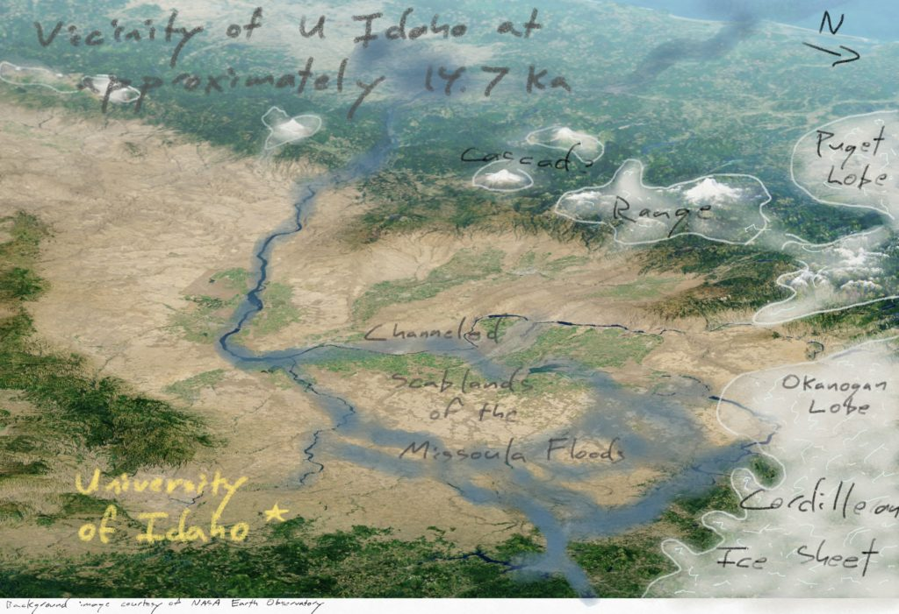
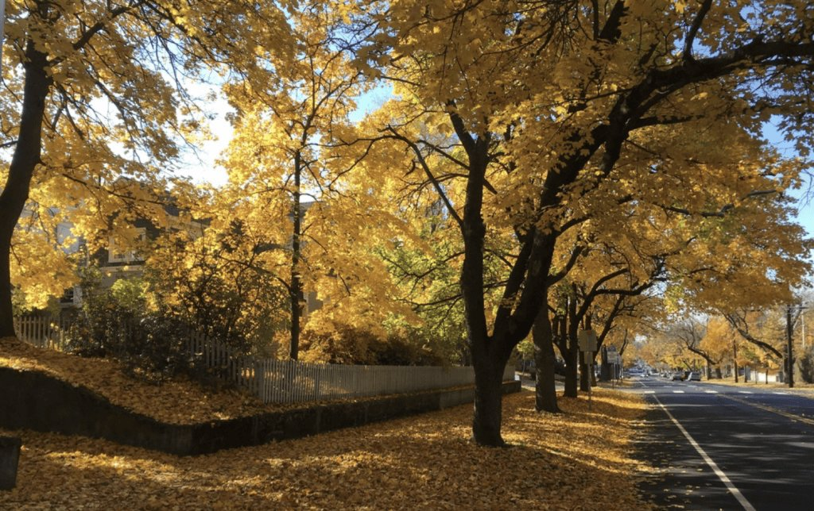
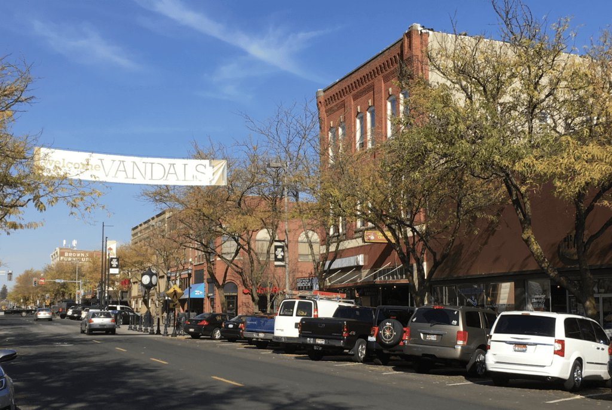
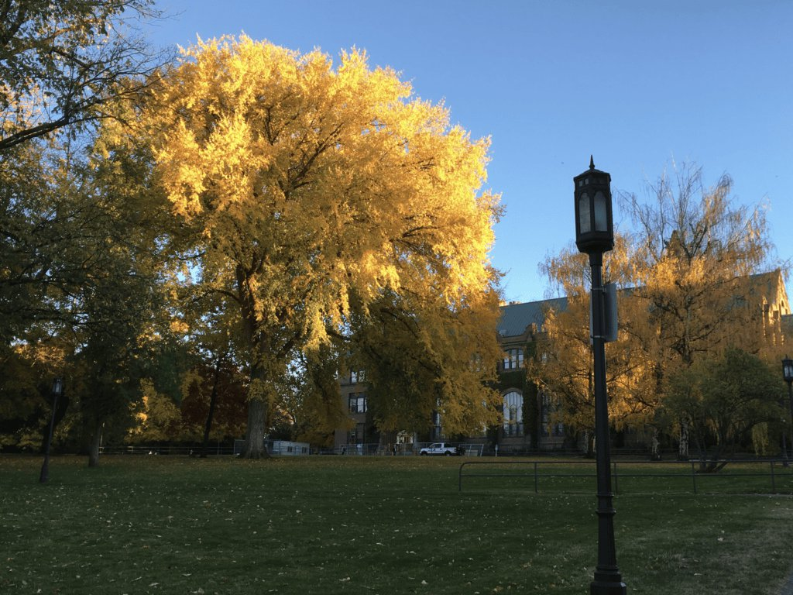
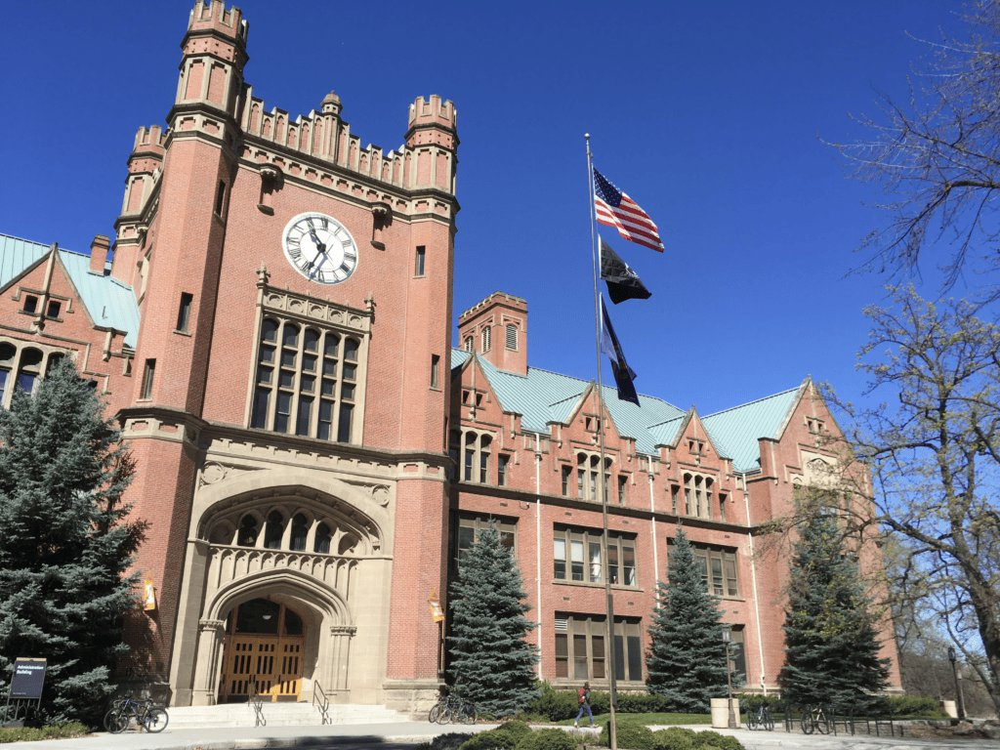

October 14-15, 2022,
at the University of Idaho,
in Moscow, ID
We invite you to attend the annual meeting of Northwest Glaciologists on Friday and Saturday, Oct. 14-15, 2022. The meeting will be hosted at the University of Idaho by the UI Glacier Dynamics Group, within "earshot*," but safely out of the Missoula Flood pathways.

Following custom, this Meeting of Northwest Glaciologists will be an informal event, but please indicate your intention to register via the form above. Please email nwglaciologists2022@gmail.com if you have any questions.
Program and logistics
The meeting will run from approximately 9 am - 5 pm on both Friday and Saturday. The registration fee will likely be between $30 and $60 per person depending on career stage, in order to cover the cost of food and refreshment. There will be a social event and dinner hosted at Tim Bartholomaus' home on Friday evening. Directions will be shared at the meeting.
This year, while we have more than 50 attendees and over 35 talks scheduled, we are also able to accommodate all requests for oral and poster presentations. If you indicated interest in a presentation, please proceed with preparing your presentation. Oral presentation time slots will be 15 minutes, so please prepare a talk no longer than 12 minutes to allow for 3 minutes of questions and changeover to the next speaker. If you would like to present but have not yet, please proceed with completing the registration form. It's not too late!
We'll be set up for registration, coffee, and a light snack on Friday at 8:15 am (local, Pacific time). We'll start with the program at 9:00 am. Friday morning we'll be in the Teaching and Learning Center (TLC) building, room 022, on the ground floor, connected to (and west of) the Idaho Student Union Building, approximately here: https://goo.gl/maps/ReJAiLXE3zmtzUHk8. Friday after lunch and on Saturday, we'll be in IRIC (more on that during the meeting). A campus map is here.
A tentative schedule is below.
Welcoming all, safely
In anticipation of the continued endemic status of COVID-19, we request that everyone pursue rapid testing in advance of their attendance, either on Thursday, Oct 13th, or on Friday before you arrive at the meeting. We'll be asking about this testing during registration on Friday morning. While the University of Idaho does not require masking on its campus, we request that attendees wear face masks during the meeting.
Northwest Glaciologists is a warm, supportive, and inclusive meeting, with a strong emphasis on building and maintaining community. Graduate students and other early career researchers are especially invited to present. Many attendees may choose to give 12 minute oral presentations (not including time for questions), including those at the beginning of their studies, although poster presentations will also be a part of this meeting. While this has traditionally been a regional meeting of northwest institutions, all are welcome to attend, particularly those working on glaciers within Northwest North America, including Alaska and the Yukon. We hope you will join us!
Travel and accommodation




Moscow is a lovely, vibrant, walkable, small town. During mid-October, the fall foliage is typically gorgeous and the weather crisp. Drive times to the University of Idaho are 4 hrs from Missoula, 5 hrs from Seattle, 5.5 hrs from Boise, 6 hrs from Portland, and 8 hrs from Vancouver, BC. The Moscow/Pullman airport, 15 minutes from town, has daily flights between Seattle and Boise. Other airports nearby are Lewiston, ID, and Spokane, WA.
If you are flying into Moscow/Pullman airport, we'd like to see if we can shuttle you to/from town. Please complete this form by Wednesday afternoon, Oct 12th, if you're interested: https://forms.gle/YVvdVvEhmiWmDaQM6.
To keep costs down, we will be able to offer housing on couches and spare bedrooms to a number of attendees. Please indicate your interest in this informal housing with local Moscow hosts via the registration form at the top of this page or below. There are also several excellent hotels. We can recommend the Monarch Motel and Hattabaugh Hotel both downtown, among several nationwide hotels.
Please register by completing the form linked here
* "earshot" may be figurative, but Tim thinks there's a decent chance that this would have been true several times within one's late Pleistocene lifetime. Imagine that!